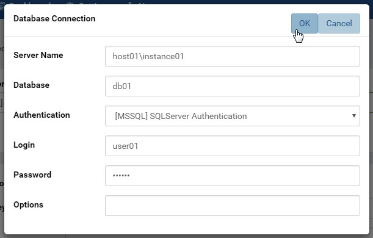
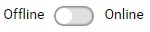
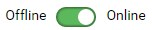
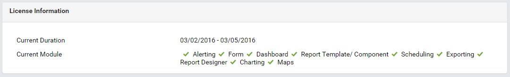

System DB and License¶
The System DB and License page allows user (admin) to
- install to a target database
- validate and store the license inside that database
- renew the license or activate new modules.
Clean-install Preparations¶
A database server with an empty database already created - this would become the Izenda system database. Supported database servers include:
- Oracle
- MySQL
- Microsoft SQL Server
- PostgreSQL
- Microsoft Azure SQL Database
An Izenda license key - email sales@izenda.com for a trial license.
Note
For the System Configuration Database:
- The connection string user should have permissions to create, insert, update, select, delete on all tables in the database; create realationship; create index
- The user should also have permissions to create temp tables
Install the System Database¶
The first section is to input, verify and save the database connection information.

Fig. 33 System DB & License
In browser, log in to Izenda as an Admin.
Click System DB & License in the left menu. (Fig. 33)
-
Select database server type from the dropdown box. (Fig. 34)
All major database servers are already supported.
Click the Connection Builder icon (⚡) to help build the connection string easily. (Fig. 35)
Fig. 36 Connection Builder
The Connection Builder. (Fig. 36)
This step can be bypassed when user already knows the connection string. In this case, it can be copied and pasted straight into the Connection String box. Some connection string examples are also provided below.
Example Connection Strings:
- Oracle:
- Data Source=(DESCRIPTION=(ADDRESS=(PROTOCOL=TCP)(HOST=192.168.45.37)(PORT=1521))(CONNECT_DATA=(SERVICE_NAME=MyOracleSID)));User Id=user;Password=password;
- Data Source=(DESCRIPTION=(ADDRESS=(PROTOCOL=TCP)(HOST=192.168.45.37)(PORT=1521))(CONNECT_DATA=(SID=xe)));User Id=user;Password=password;
- Microsoft SQL Server:
- Server=192.168.45.37,1433;Database=izendaconfig;User ID=user;Password=password
- Server=HOST-PC;Database=izendaconfig;User ID=user;Password=password
- MySQL:
- Server=MY-PC;Port=3306;Database=izendaconfig;User ID=user;Password=password
- PostgreSQL:
- Server=mydomainname;Port=5432;Database=izendaconfig;User ID=user;Password=password
Note
- If using Izenda v3.0.0 or greater and a PostgreSQL connection string with “SslMode=Require”, the “Trust Server Certificate=true;” parameter will also need to be added.
- Server=mydomainname;Port=5432;Database=izendaconfig;User ID=user;Password=password;SslMode=Require;Trust Server Certificate=true;
Click the Connect button to test database connection and all necessary permissions for Izenda to work.
The Connection String box will be highlighted while the database is being set up for first use.
After the connection string has been verified successfully, it will be saved and user can move next to the License section.
Note
Unless the Connection String has been verified successfully, user will not be able to perform any further action.
{kind=link}
{kind=link}
{kind=link}
{kind=link}
Validate and Store the License¶
In this section user will input, validate and save the license.
Click the Offline/Online switch to specify the license mode. (Fig. 38 and Fig. 39)
Fig. 38 Offline mode
Fig. 39 Online mode
Enter the license.
- For Offline mode user needs to enter the license key and token.
- For Online mode user needs to enter the license key.
Click Validate.
Note
In Online mode, another connection will be initiated to Izenda License Server for key validation.
Upon successful validation, the license will be automatically saved in the database. The license details will also be displayed in the License Information section for review. (Fig. 40)
Fig. 40 License Information section
{kind=link}
System Mode Settings¶
Select to use multi-tenant mode or not.
This mode allows multiple clients on the same Izenda system.

Fig. 41 System Mode
If using multi-tenant mode, select to allow duplicated user id among different tenants or not.
Import Map Data¶
Optionally provision Map data. This is only needed if the report part type Map is to be used in reports and dashboards.
US zip codes match on first 5 number, and Canadian zip codes will match on the first 3 characters of the zip code.
Note
Izenda Map data contains all countries and all US and Canada cities and will take several minutes to be fully set up.
To upgrade map data when any changes are made by Izenda please follow the instructions below. We do not automatically run these types of upgrades as map report parts will not work until the process is complete:
- Update IzendaSystemSetting Table in your Izenda Configuration Database as below:
1 2 3 | Update IzendaSystemSetting
Set Value = 0
Where Name = 'ProvisionStaticDataStatus'
|
Warning
As general best practice, we recommend backing up your database before making any manual updates.
- After making these changes, all API instances should be restarted.
- Next you will need to log into the Izenda Application as a System Administrator and Run “Provision Map Data” on the Izenda DB & License Page to insert the new data.
Once this is complete, map report parts will be available again.
Modify the License¶
The Database Connection and License Entry page allows modifying the license to either renew it or activate new modules.
In browser, log in to Izenda as an Admin.
Click System DB & License in the left menu.
Note the current license details in License Information section.
Click the Offline/Online switch to specify the license mode.
Enter the license.
- For Offline mode user needs to enter the new license key and token.
- For Online mode user needs to enter the new license key.
Click Validate.
Note
In Online mode, another connection will be initiated to Izenda License Server for key validation.
Upon successful validation, the new license will be automatically saved in the database.
Please review the new license details in License Information section. (Fig. 42)
{kind=link}
Select new System Database¶
Only select new system database if needed, since all current settings are not copied to the new database.
In browser, log in to Izenda as an Admin.
Click System DB & License in the left menu.
Use the Connection Builder to build the new connection string.
Click Connect.
Click OK in the confirmation pop-up to acknowledge that the license needs to be re-validated afterwards. (Fig. 43)
If there is an error with the new database connection, the current connection continues to be used. (Fig. 44)
System will be installed to the new database.
{kind=link}
{kind=link}
Notifications¶
Nearly-expired License Reminder¶
{kind=link}
User will get this reminder when the license is near expiration. (Fig. 45)
User will need to request a new license, then enter and validate it in the system.
Changing License to Online/Offline Confirmation¶
When switching the license mode, there will be a pop-up confirmation.
{kind=link}
{kind=link}
Click OK to confirm or Cancel to keep current license mode.
Email Support¶
Should user has any further question, he/she can quickly ask for assistance via email by clicking the envelope icons (✉) in Database Connection and License sections respectively.